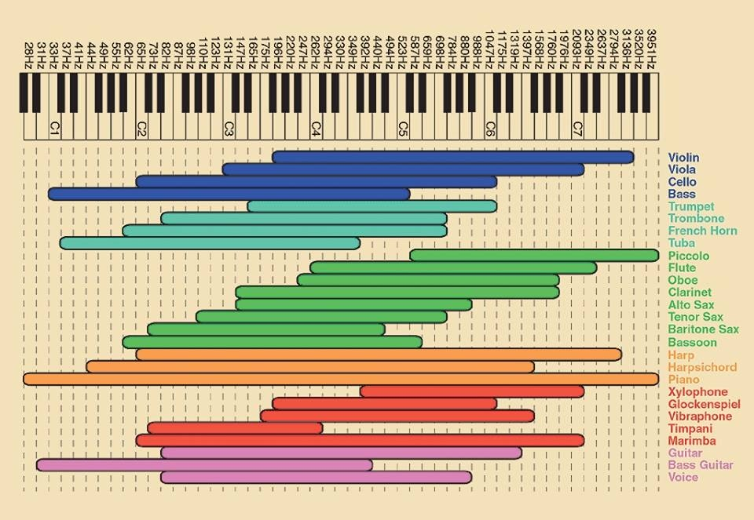
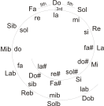

La Musique pour les noobs
Du rythme
Mesure et chiffrage
Un peu de physique
- Amplitude
- Fréquence
- Timbre
Fréquence
A4=440Hz mira gestorum famuli tuorum,
solve polluti labii reatum,
Sancte Iohannes.
| France, Italie, Espagne, Portugal | la | si | do | ré | mi | fa | sol |
| Angleterre | A | B | C | D | E | F | G |
Echelle diatonique
| do | ré | mi | fa | sol | la | si | do | |||||||
| 1T | 1T | ½T | 1T | 1T | 1T | ½T |
♯ = +½ ton — ♭ = -½ ton
Timbre
Perception des notes
Transformée de Fourier
Intervalles
| Intervalle | Unisson | Seconde | Tierce | Quarte | Quinte | Sixte | Septième | Octave |
|---|---|---|---|---|---|---|---|---|
| entre do et | do | ré | mi | fa | sol | la | si | do |
| tons | 0 | 1 | 2 | 2½ | 3½ | 4½ | 5½ | 6 |
Corde
Reconnaître les intervalles
| Intervalle | Tons | Exemple |
| 2m | ½ | Les dents de la mer / Lettre à Elise |
| 2M | 1 | Joyeux anniversaire / Yesterday |
| 3m | 1½ | Seven Nation Army / Hey Jude |
| 3M | 2 | When the saints go marching in / 5e Symphonie de Beethoven |
| 4J | 2½ | La Marseillaise / Super Mario |
| 4+ | 3 | Les Simpsons / Enter Sandman |
| 5J | 3½ | Star Wars / Retour vers le futur |
| 6m | 4 | L'arnaque / Love story |
| 6M | 4½ | Comme d'habitude / Man in the mirror |
| 7m | 5 | Star Trek / The winner takes it all |
| 7M | 5½ | Take on me |
| 8 | 6 | Singin' in the rain / Bulls on Parade |
Accords
Ensemble de notes (simultanément ou non)
Notation moderne
- C : Do majeur
- Cm : Do mineur
- C5 : Do avec uniquement la quinte (powerchord)
- Dsus4 : Ré majeur avec une quarte à la place de la tierce
- G7 : Sol avec 7ème mineure
- D/F♯ : Ré avec une basse en F♯
Gammes
| Gamme majeure | ||||||||||||||
| 1T | 1T | ½T | 1T | 1T | 1T | ½T | ||||||||
| do | ré | mi | fa | sol | la | si | do | |||||||
| sol | la | si | do | ré | mi | fa♯ | sol | |||||||
| mi | fa♯ | sol♯ | la | si | do♯ | ré♯ | mi | |||||||
| Gamme mineure | ||||||||||||||
| 1T | ½T | 1T | 1T | ½T | 1T | 1T | ||||||||
| la | si | do | ré | mi | fa | sol | la | |||||||
| do | ré | mi♭ | fa | sol | la♭ | si♭ | do | |||||||
| Gamme pentatonique mineure | ||||||||||||||
| 1½T | 1T | 1T | 1½T | 1T | ||||||||||
| mi | sol | la | si | ré | ||||||||||
| Gamme blues | ||||||||||||||
| 1½T | 1T | ½T | ½T | 1½T | 1T | |||||||||
| mi | sol | la | la♯ | si | ré | |||||||||
Degrés
| do | ré | mi | fa | sol | la | si |
| I | II | III | IV | V | VI | VII |
I : Tonique
V : Dominante
IV : Sous-dominante
Les 4 accords
I V vi IV
Modulation
Tonalités voisines
Truck Driver's Gear Change
(ou modulation de l'arrangeur
ou tonulation)
Stevie Wonder, Beatles, ABBA, John Williams,...
+ ½ ou 1 ton en fin de morceau pour un effet épique
♪
Crédits
Gif FFT : https://commons.wikimedia.org/wiki/File:Fouriertransformtimeandfrequencydomains.gif https://commons.wikimedia.org/wiki/File:Fouriersynthesissquarewave_animated.gif
Registre instruments : https://commons.wikimedia.org/wiki/File:EstensioneStrumentiMusicale.jpg
Intervalles : https://www.earmaster.com/products/free-tools/interval-song-chart-generator.html
Reveal.js
https://github.com/rajgoel/reveal.js-plugins/tree/master/audio-slideshow
https://github.com/rajgoel/reveal.js-plugins/tree/master/anything
piano svg https://commons.wikimedia.org/wiki/File:PianoKeyboard.svg
Batman : https://www.flickr.com/photos/hanshotfirst/with/36068178326/
http://tvtropes.org/pmwiki/pmwiki.php/Main/TheFourChordsOfPop
https://commons.wikimedia.org/wiki/File:Melcultonalitatilor-_lasido.svg